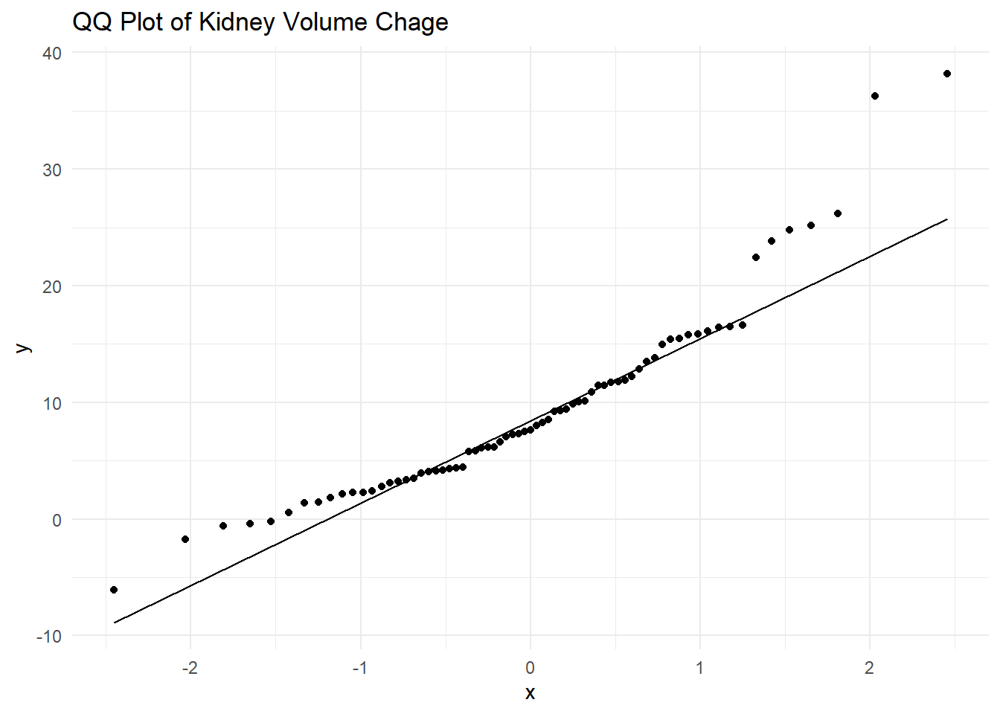
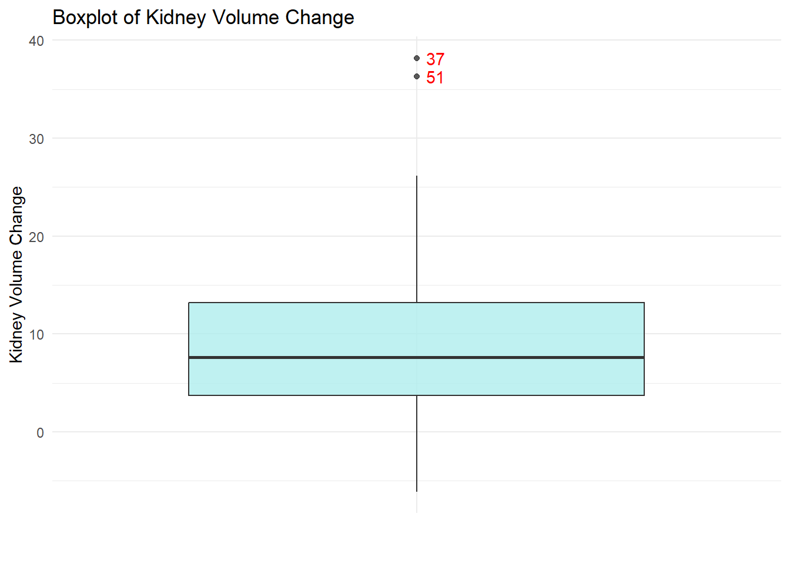
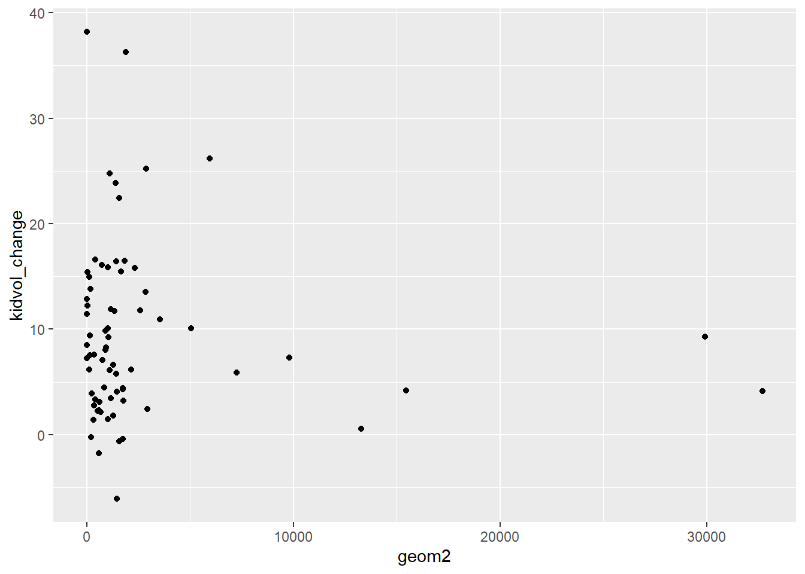
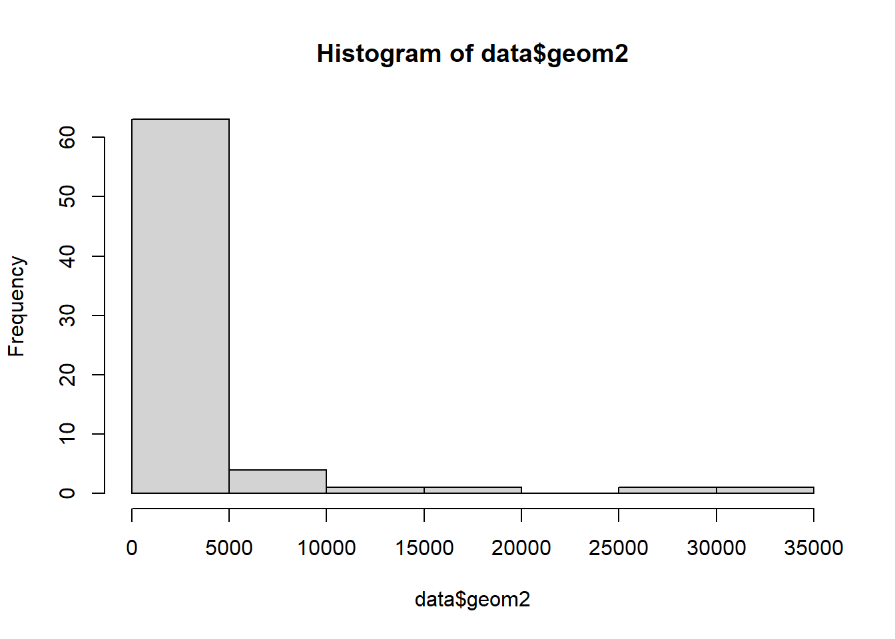

library(dplyr)
library(ggplot2)
library(tidyverse)
library(plotly) # Used for interactive plots
library(kableExtra) # Used for pretty printing (kable_styling)
library(ggridges) # Used for plotting distributions
library(naniar) # Used to visualize missingness
library(patchwork) # Used to chain ggplots togetherPredictive Modelling
Advanced Data Analysis - Project 3
Introduction
The aim of the current study is to investigate whether MRI image features extracted from baseline kidney images can enhance the prediction of disease progression in young Autosomal Dominant Polycystic Kidney Disease (ADPKD) patients. This study is important because recent literature has demonstrated the inclusion of MRI image features improves the prognostic accuracy of models in adults, but this has not yet been demonstrated in children. Improving prediction models could greatly assist in diagnosing and predicting kidney disease outcomes in children, which is more challenging than in adults and could lead to improved treatment.

Task One

Task Two

Clinical Hypotheses
The two clinical hypotheses for this study are that including MRI image features will improve model performance compared to using baseline kidney volume alone in models predicting
Percentage change of total kidney volume growth
Classification of a patient as having fast or slow progression of the disease.
Background
Here we will review background information on the methodology and variables provided in this data set.
Gabor Transform
What is it
The Gabor Transform, named after Dennis Gabor, is a powerful technique for analyzing the texture of MRI images. By convolving the image with a Gabor filter, it becomes possible to discriminate between features based on intensity differences. This allows the target region and background to be differentiated if they possess distinct features, as they will exhibit different intensity levels. Moreover, the Gabor Transform has tunable parameters, such as the frequency of the sinusoidal wave, which can be adjusted to extract specific textures from the images. Higher frequencies are ideal for capturing fine textures, while lower frequencies are better suited for coarse textures.
How it Works
The Gabor Filter first applies a Gaussian Envelope to focus on a small region of the image. It then applies a sinusoidal wave that oscillates at a specific frequency and captures the variation in intensities at that frequency and orientation within that region.
Example of Gabor Transform

Image Features Provided by the Gabor Transform
In general, Gabor functions can easily extract features of:
Spatial Frequency (e.g. how often pixel intensity changes in a given area)
Density (e.g. concentration of features within a certain area)
Orientation (e.g. Textures or edges at 0°, 45°, 90°, 135°)
Phase (e.g. alignment/distance of features)
Energy (e.g. overall intensity)
Gray Level Co-Occurrence Matrix
What is it
The Gray Level Co-Occurrence Matrix (GLCM) is another powerful tool for extracting texture features from an MRI image. GLCM works under the assumption that the textural information in an image is contained in the “average” spatial relationship that the gray tones in the image have to each other. For example, when a small patch of the picture has little variation of features, the dominant property is tone; When a small patch of a picture has high variation, the dominant property is texture (3).
How it Works
GLCM examines the spatial relationship between pairs of pixels in an image and calculates how often pairs of pixel values occur at a specified distance and orientation. It does this by computing a set of gray-tone spacial-dependence matrices for various angular relationships and distances between neighboring resolution cell pairs on the image (3).
Example of GLCM

Image Features Provided by GLCM
In general, GLCM provides information on the following features:
Homogeneity
Linear Structure
Contrast
Number and Nature of Boundaries
Complexity of the Image
Local Binary Pattern
What is it
The Local Binary Pattern (LBP) is a third powerful method for extracting texture features from an image. An important and fundamental property of texture is how uniform the patterns are, and LBP captures this by detecting these uniform patterns in circular neighborhoods at any rotation and spatial resolution. LBP is rotation invariant, meaning it does not matter what rotation the image is at; it will always extract very similar features) (4).
How it Works
LBP works by comparing the intensity of a central pixel with its neighboring pixels and encoding this relationship into a binary pattern. For each neighbor, if it’s intensity is greater or equal to the central pixel, it gets assigned a 1 (otherwise a 0). The binary values of all neighbors are then concatenated to form a binary number, and this number is converted into a decimal that represent the LBP for the central pixel (4).
Example of LBP

Code Information

Image Features Provided by the LBP
In general, the LBP provides image features on:
Uniformity
Local Contrast
Texture Description
Spatial Patterns
Gray Level Distribution
Method
Study Design
The investigators recruited 71 young patients with ADPKD and collected MRI data at baseline and after 3 years. Additionally, the height corrected kidney volume for each patient was collected at baseline and 3 years by a physician, and the percentage change calculated. Patients were classified as having slow or fast progression of the disease based on this percentage change. Image features were extracted from the baseline MRI images including 2 image features on kidney geometric information, 5 features based on Gabor transform, 2 features based on gray level co-occurrence matrix, 5 features based on image textures, and 5 features based on local binary pattern.
Statistical Hypotheses
A linear regression model predicting percentage change of total kidney volume growth including MRI image features and baseline kidney volume will have better performance than a model with baseline kidney volume alone, as determined by specificity, sensitivity, PPV, NPV, accuracy, and AUC.
A logistic regression model predicting classification of disease progression as slow or fast including MRI image features and baseline kidney volume will have better performance than a model with baseline kidney volume alone, as determined by specificity, sensitivity, PPV, NPV, accuracy, and AUC.
Data Preparation
Load Packages
Read .CSV
# Read in data
data <- read_csv("C:/Users/sviea/Documents/Portfolio/Project_3_Predictive_Modelling/Project_3_R/Raw_Data/Project3_data.csv")Rows: 71 Columns: 24
── Column specification ────────────────────────────────────────────────────────
Delimiter: ","
dbl (24): Subject ID, geom1, geom2, gabor1, gabor2, gabor3, gabor4, gabor5, ...
ℹ Use `spec()` to retrieve the full column specification for this data.
ℹ Specify the column types or set `show_col_types = FALSE` to quiet this message.Examine Data Set
# Examine data
pretty_print(head(data))| Subject ID | geom1 | geom2 | gabor1 | gabor2 | gabor3 | gabor4 | gabor5 | glcm1 | glcm2 | txti1 | txti2 | txti3 | txti4 | txti5 | lbp1 | lbp2 | lbp3 | lbp4 | lbp5 | tkvht_base | tkvht_visit2 | progression | tkvht_change |
|---|---|---|---|---|---|---|---|---|---|---|---|---|---|---|---|---|---|---|---|---|---|---|---|
| 1 | 1.071923 | 1.149019 | -0.0292053 | -0.0798071 | 0.0023308 | 0.0008529 | 0.0063692 | 405.57142 | 164488.179 | -4.401442 | -12.085150 | 53.192089 | 19.372693 | 146.050849 | -0.5211817 | 0.0812259 | -0.0423335 | 0.2716304 | 0.0065977 | 435 | 585 | 1 | 11.44 |
| 2 | 54.031476 | 2919.400411 | -0.0499853 | -0.1266310 | 0.0063297 | 0.0024985 | 0.0160354 | -580.93865 | 337489.719 | 3.595325 | -1.991768 | -7.161054 | 12.926362 | 3.967141 | -0.5572404 | -0.4665611 | 0.2599867 | 0.3105169 | 0.2176792 | 555 | 595 | 0 | 2.42 |
| 3 | -32.024389 | 1025.561486 | -0.0152715 | 0.0424398 | -0.0006481 | 0.0002332 | 0.0018011 | -1037.25839 | 1075904.968 | 25.367336 | -5.308749 | -134.668822 | 643.501717 | 28.182818 | -0.2515471 | 0.6778935 | -0.1705221 | 0.0632760 | 0.4595395 | 191 | 249 | 1 | 10.08 |
| 4 | -42.832485 | 1834.621814 | -0.0153948 | 0.0435459 | -0.0006704 | 0.0002370 | 0.0018962 | -1018.07892 | 1036484.679 | 25.518531 | -5.561043 | -141.909649 | 651.195432 | 30.925199 | -0.2463696 | 0.6684585 | -0.1646879 | 0.0606980 | 0.4468368 | 334 | 498 | 1 | 16.47 |
| 5 | -10.637344 | 113.153096 | 0.1630437 | 0.0797533 | 0.0130033 | 0.0265832 | 0.0063606 | 64.64083 | 4178.437 | 2.446875 | -6.297954 | -15.410304 | 5.987195 | 39.664227 | -0.5663138 | 0.2676994 | -0.1516019 | 0.3207114 | 0.0716630 | 263 | 311 | 0 | 6.14 |
| 6 | 71.079477 | 5052.292049 | -0.0824492 | -0.1101542 | 0.0090821 | 0.0067979 | 0.0121340 | -1459.90430 | 2131320.550 | 2.432428 | -6.506258 | -15.826002 | 5.916703 | 42.331398 | -1.1999136 | -0.1108972 | 0.1330671 | 1.4397927 | 0.0122982 | 609 | 793 | 1 | 10.09 |
# Check data types
glimpse(data)Rows: 71
Columns: 24
$ `Subject ID` <dbl> 1, 2, 3, 4, 5, 6, 7, 8, 9, 10, 11, 12, 13, 14, 15, 16, 17…
$ geom1 <dbl> 1.071923, 54.031476, -32.024389, -42.832485, -10.637344, …
$ geom2 <dbl> 1.149019, 2919.400411, 1025.561486, 1834.621814, 113.1530…
$ gabor1 <dbl> -0.029205293, -0.049985252, -0.015271484, -0.015394838, 0…
$ gabor2 <dbl> -0.079807149, -0.126631032, 0.042439800, 0.043545875, 0.0…
$ gabor3 <dbl> 0.002330791, 0.006329684, -0.000648119, -0.000670382, 0.0…
$ gabor4 <dbl> 0.000852949, 0.002498525, 0.000233218, 0.000237001, 0.026…
$ gabor5 <dbl> 0.006369181, 0.016035418, 0.001801137, 0.001896243, 0.006…
$ glcm1 <dbl> 405.57142, -580.93865, -1037.25839, -1018.07892, 64.64083…
$ glcm2 <dbl> 164488.179, 337489.719, 1075904.968, 1036484.679, 4178.43…
$ txti1 <dbl> -4.4014422, 3.5953250, 25.3673356, 25.5185311, 2.4468746,…
$ txti2 <dbl> -12.0851499, -1.9917682, -5.3087492, -5.5610430, -6.29795…
$ txti3 <dbl> 53.192089, -7.161054, -134.668822, -141.909649, -15.41030…
$ txti4 <dbl> 19.3726934, 12.9263620, 643.5017174, 651.1954318, 5.98719…
$ txti5 <dbl> 146.0508494, 3.9671407, 28.1828179, 30.9251993, 39.664226…
$ lbp1 <dbl> -0.52118174, -0.55724044, -0.25154711, -0.24636960, -0.56…
$ lbp2 <dbl> 0.08122595, -0.46656106, 0.67789345, 0.66845853, 0.267699…
$ lbp3 <dbl> -0.042333481, 0.259986692, -0.170522142, -0.164687860, -0…
$ lbp4 <dbl> 0.271630410, 0.310516908, 0.063275951, 0.060697979, 0.320…
$ lbp5 <dbl> 0.006597654, 0.217679225, 0.459539531, 0.446836807, 0.071…
$ tkvht_base <dbl> 435, 555, 191, 334, 263, 609, 149, 580, 338, 288, 281, 57…
$ tkvht_visit2 <dbl> 585, 595, 249, 498, 311, 793, 198, 657, 362, 306, 266, 95…
$ progression <dbl> 1, 0, 1, 1, 0, 1, 1, 0, 0, 0, 0, 1, 1, 1, 0, 1, 1, 0, 1, …
$ tkvht_change <dbl> 11.44, 2.42, 10.08, 16.47, 6.14, 10.09, 10.91, 4.40, 2.30…Create Factors
Everything is appropriately coded as a double.
Let’s just convert progression into a factor that contains the levels for “slow” or “fast and we’re good to go. We will also rename some variables for convenience.
# Convert progression into a factor
data <- data |>
mutate(progression = factor(progression,
levels = c(0,1),
labels = c("Slow", "Fast")))
# Rename Subject ID and kidney volume variables so they are easier to access
data <- data |>
rename(Subject_ID = `Subject ID`,
kidvol_base = tkvht_base,
kidvol_visit2 = tkvht_visit2,
kidvol_change = tkvht_change)
# Rename kidney volume variables to be easier to access
# Double check data types
glimpse(data)Rows: 71
Columns: 24
$ Subject_ID <dbl> 1, 2, 3, 4, 5, 6, 7, 8, 9, 10, 11, 12, 13, 14, 15, 16, 1…
$ geom1 <dbl> 1.071923, 54.031476, -32.024389, -42.832485, -10.637344,…
$ geom2 <dbl> 1.149019, 2919.400411, 1025.561486, 1834.621814, 113.153…
$ gabor1 <dbl> -0.029205293, -0.049985252, -0.015271484, -0.015394838, …
$ gabor2 <dbl> -0.079807149, -0.126631032, 0.042439800, 0.043545875, 0.…
$ gabor3 <dbl> 0.002330791, 0.006329684, -0.000648119, -0.000670382, 0.…
$ gabor4 <dbl> 0.000852949, 0.002498525, 0.000233218, 0.000237001, 0.02…
$ gabor5 <dbl> 0.006369181, 0.016035418, 0.001801137, 0.001896243, 0.00…
$ glcm1 <dbl> 405.57142, -580.93865, -1037.25839, -1018.07892, 64.6408…
$ glcm2 <dbl> 164488.179, 337489.719, 1075904.968, 1036484.679, 4178.4…
$ txti1 <dbl> -4.4014422, 3.5953250, 25.3673356, 25.5185311, 2.4468746…
$ txti2 <dbl> -12.0851499, -1.9917682, -5.3087492, -5.5610430, -6.2979…
$ txti3 <dbl> 53.192089, -7.161054, -134.668822, -141.909649, -15.4103…
$ txti4 <dbl> 19.3726934, 12.9263620, 643.5017174, 651.1954318, 5.9871…
$ txti5 <dbl> 146.0508494, 3.9671407, 28.1828179, 30.9251993, 39.66422…
$ lbp1 <dbl> -0.52118174, -0.55724044, -0.25154711, -0.24636960, -0.5…
$ lbp2 <dbl> 0.08122595, -0.46656106, 0.67789345, 0.66845853, 0.26769…
$ lbp3 <dbl> -0.042333481, 0.259986692, -0.170522142, -0.164687860, -…
$ lbp4 <dbl> 0.271630410, 0.310516908, 0.063275951, 0.060697979, 0.32…
$ lbp5 <dbl> 0.006597654, 0.217679225, 0.459539531, 0.446836807, 0.07…
$ kidvol_base <dbl> 435, 555, 191, 334, 263, 609, 149, 580, 338, 288, 281, 5…
$ kidvol_visit2 <dbl> 585, 595, 249, 498, 311, 793, 198, 657, 362, 306, 266, 9…
$ progression <fct> Fast, Slow, Fast, Fast, Slow, Fast, Fast, Slow, Slow, Sl…
$ kidvol_change <dbl> 11.44, 2.42, 10.08, 16.47, 6.14, 10.09, 10.91, 4.40, 2.3…Summary
- 71 patients
- 19 MRI image features
- 4 kidney volume variables
Missingness
# Examine missingness
gg_miss_var(data)
# Examine missingness percents
vis_miss(data)
We have 0 missing values!
Data Examination
Here I will perform the intial examination of the distribution of our variables.
Univariate Distributions
Dependent Variables
Baseline Kidney Volume
# Visualize baseline kidney volume
ggplot(data, aes(x = kidvol_base)) +
geom_histogram() +
theme_minimal()`stat_bin()` using `bins = 30`. Pick better value with `binwidth`.
Kidney volume at baseline appears to not be normally distributed.
However, I learned in the last project that taking the change score (or percent) will make the outcome normally distributed, as it is a way of counting for between subject variance.
Percent Change in Kidney Volume
# Create histogram
ggplot(data, aes(x = kidvol_change)) +
geom_histogram(fill = "paleturquoise", binwidth = 4.5) +
theme_minimal() +
labs(title = "Histogram of Kidney Volume Change",
y = "Kidney Volume Change (%)",
x = "Subject ID")
# Create qqplot
ggplot(data, aes(sample = kidvol_change)) +
geom_qq() +
geom_qq_line() +
theme_minimal() +
labs(title = "QQ Plot of Kidney Volume Chage",)
# Calculate IQR and identify outliers
IQR_val <- IQR(data$kidvol_change)
Q1 <- quantile(data$kidvol_change, 0.25)
Q3 <- quantile(data$kidvol_change, 0.75)
lower_bound <- Q1 - (1.5*IQR_val)
upper_bound <- Q3 + (1.5*IQR_val)
# Create boxplot and flag outliers
ggplot(data, aes(x = "", y = kidvol_change)) +
geom_boxplot(fill = "paleturquoise", alpha = 0.8) +
geom_text(aes(label = ifelse(kidvol_change < lower_bound | kidvol_change > upper_bound, Subject_ID, "")), hjust = -0.5, color = "red") +
theme_minimal() +
labs(title = "Boxplot of Kidney Volume Change",
x = "",
y = "Kidney Volume Change")
The percent change in total kidney volume appears almost normally distributed, though there may be some outliers.
Patients 37 and 51 are flagging as potential outliers. Let’s examine them.
# Examine outlier patients
data |>
arrange(desc(kidvol_change)) |>
head() |>
pretty_print()| Subject_ID | geom1 | geom2 | gabor1 | gabor2 | gabor3 | gabor4 | gabor5 | glcm1 | glcm2 | txti1 | txti2 | txti3 | txti4 | txti5 | lbp1 | lbp2 | lbp3 | lbp4 | lbp5 | kidvol_base | kidvol_visit2 | progression | kidvol_change |
|---|---|---|---|---|---|---|---|---|---|---|---|---|---|---|---|---|---|---|---|---|---|---|---|
| 37 | -3.860771 | 14.90555 | 0.2621932 | -0.1983384 | -0.0520030 | 0.0687453 | 0.0393381 | 871.6238 | 759728.00 | -14.72259 | -1.9694239 | 28.995016 | 216.7546 | 3.8786306 | -0.0557547 | 0.0722141 | -0.0040263 | 0.0031086 | 0.0052149 | 173 | 372 | Fast | 38.19 |
| 51 | -43.393038 | 1882.95573 | 0.0047377 | 0.0544573 | 0.0002580 | 0.0000224 | 0.0029656 | 2454.8065 | 6026075.10 | -14.67151 | -9.3555748 | 137.260393 | 215.2532 | 87.5267799 | 0.1577583 | 0.1676594 | 0.0264497 | 0.0248877 | 0.0281097 | 185 | 387 | Fast | 36.28 |
| 52 | 77.054904 | 5937.45816 | 0.4598489 | 0.1556082 | 0.0715563 | 0.2114611 | 0.0242139 | -638.4451 | 407612.16 | 20.26785 | 9.6868879 | 196.332342 | 410.7855 | 93.8357967 | 9.7525713 | 1.1625327 | 11.3376835 | 95.1126464 | 1.3514824 | 358 | 640 | Fast | 26.18 |
| 16 | -53.668735 | 2880.33311 | 0.0179566 | 0.0169461 | 0.0003043 | 0.0003224 | 0.0002872 | -1045.7503 | 1093593.77 | 22.59997 | 6.9449272 | 156.955173 | 510.7588 | 48.2320141 | 1.2350248 | -0.0196489 | -0.0242669 | 1.5252862 | 0.0003861 | 124 | 218 | Fast | 25.19 |
| 50 | 33.361504 | 1112.98996 | -0.1270457 | -0.0812793 | 0.0103262 | 0.0161406 | 0.0066063 | 1063.3743 | 1130764.98 | -26.04777 | 0.2502787 | -6.519202 | 678.4864 | 0.0626394 | 0.5581614 | -1.1616502 | -0.6483883 | 0.3115442 | 1.3494312 | 334 | 583 | Fast | 24.77 |
| 60 | -37.454576 | 1402.84529 | 0.0584093 | 0.0359878 | 0.0021020 | 0.0034116 | 0.0012951 | -243.9828 | 59527.61 | 12.34253 | -2.8642032 | -35.351520 | 152.3381 | 8.2036599 | 0.6218992 | -0.0617567 | -0.0384065 | 0.3867586 | 0.0038139 | 188 | 322 | Fast | 23.84 |
Interesting, it looks like these patients also have high values for certain MRI image features, such as GLCM 1 and 2. Additionally, they do not have the highest visit 2 kidney volumes, they simply increases in size the most.
Summary
While patients 37 and 51 are potential outliers on kidvol_change, these are NOT erroneous values. On the contrary, they are backed up by similar high values on other measurements such as glcm2, but are not universally high on all MRI image features. In other words, these appear to be very realistic values.
In summary, all values are derived from authentic biological data and we are motivated to retain them in the analysis.
Bivariate Comparisons
data |>
arrange(desc(lbp5))# A tibble: 71 × 24
Subject_ID geom1 geom2 gabor1 gabor2 gabor3 gabor4 gabor5 glcm1
<dbl> <dbl> <dbl> <dbl> <dbl> <dbl> <dbl> <dbl> <dbl>
1 48 -124. 15442. -0.163 0.00177 -0.000288 2.66e-2 3.12e-6 2545.
2 29 99.0 9804. -0.0967 -0.135 0.0130 9.36e-3 1.82e-2 -836.
3 49 -27.1 734. 0.00606 -0.00916 -0.0000555 3.67e-5 8.39e-5 20.0
4 52 77.1 5937. 0.460 0.156 0.0716 2.11e-1 2.42e-2 -638.
5 50 33.4 1113. -0.127 -0.0813 0.0103 1.61e-2 6.61e-3 1063.
6 9 -24.2 586. -0.0844 -0.0581 0.00490 7.12e-3 3.38e-3 -693.
7 8 41.8 1744. -0.434 0.00612 -0.00266 1.88e-1 3.75e-5 -416.
8 30 -33.0 1090. 0.0263 0.0911 0.00240 6.94e-4 8.31e-3 511.
9 66 -53.2 2833. 0.0763 0.152 0.0116 5.83e-3 2.32e-2 -996.
10 46 -39.6 1571. 0.0571 0.162 0.00925 3.26e-3 2.62e-2 -192.
# ℹ 61 more rows
# ℹ 15 more variables: glcm2 <dbl>, txti1 <dbl>, txti2 <dbl>, txti3 <dbl>,
# txti4 <dbl>, txti5 <dbl>, lbp1 <dbl>, lbp2 <dbl>, lbp3 <dbl>, lbp4 <dbl>,
# lbp5 <dbl>, kidvol_base <dbl>, kidvol_visit2 <dbl>, progression <fct>,
# kidvol_change <dbl># Initialize empty list
plots <- list()
# Get column names of MRI features
features_gabor <- c("gabor1", "gabor2", "gabor3", "gabor4", "gabor5")
features_geom <- c("geom1", "geom2")
features_glcm <- c("glcm1", "glcm2")
features_txti <- c("txti1", "txti2", "txti3", "txti4", "txti5")
features_lbp <- c("lbp1", "lbp2", "lbp3", "lbp4", "lbp5")
# Plot scatterplots of each MRI feature against kidney volume change
plot_features_against_outcome <- function(features) {
for (feature in features) {
p <- ggplot(data, aes_string(x = feature, y = "kidvol_change")) +
geom_point() +
theme_minimal() +
labs(title = paste(feature),
x = feature,
y = "Kidney Volume Change (%)")
plots[[feature]] <- p
}
# Combine all plots into a grid
combined_plot <- wrap_plots(plots, ncol = 3)
combined_plot
}Gabor Transform
# Plot features against total change in kidney volume
plot_features_against_outcome(features_gabor)Warning: `aes_string()` was deprecated in ggplot2 3.0.0.
ℹ Please use tidy evaluation idioms with `aes()`.
ℹ See also `vignette("ggplot2-in-packages")` for more information.
It looks like gabor4 and gabor5 are exponential. We will get the square of those.
Geom
# Plot features against total change in kidney volume
plot_features_against_outcome(features_geom)
Geom 2 looks quadratic.
Txti
# Plot features against total change in kidney volume
plot_features_against_outcome(features_txti)
txti4 and txti5 look quadratic.
LBP
# Plot features against total change in kidney volume
plot_features_against_outcome(features_lbp)
These are either logarithmic, or that one participant is an incredible outlier.
Let’s try removing them and see what the plots look like.
# Sort by lbp5
data |>
arrange(desc(lbp5))# A tibble: 71 × 24
Subject_ID geom1 geom2 gabor1 gabor2 gabor3 gabor4 gabor5 glcm1
<dbl> <dbl> <dbl> <dbl> <dbl> <dbl> <dbl> <dbl> <dbl>
1 48 -124. 15442. -0.163 0.00177 -0.000288 2.66e-2 3.12e-6 2545.
2 29 99.0 9804. -0.0967 -0.135 0.0130 9.36e-3 1.82e-2 -836.
3 49 -27.1 734. 0.00606 -0.00916 -0.0000555 3.67e-5 8.39e-5 20.0
4 52 77.1 5937. 0.460 0.156 0.0716 2.11e-1 2.42e-2 -638.
5 50 33.4 1113. -0.127 -0.0813 0.0103 1.61e-2 6.61e-3 1063.
6 9 -24.2 586. -0.0844 -0.0581 0.00490 7.12e-3 3.38e-3 -693.
7 8 41.8 1744. -0.434 0.00612 -0.00266 1.88e-1 3.75e-5 -416.
8 30 -33.0 1090. 0.0263 0.0911 0.00240 6.94e-4 8.31e-3 511.
9 66 -53.2 2833. 0.0763 0.152 0.0116 5.83e-3 2.32e-2 -996.
10 46 -39.6 1571. 0.0571 0.162 0.00925 3.26e-3 2.62e-2 -192.
# ℹ 61 more rows
# ℹ 15 more variables: glcm2 <dbl>, txti1 <dbl>, txti2 <dbl>, txti3 <dbl>,
# txti4 <dbl>, txti5 <dbl>, lbp1 <dbl>, lbp2 <dbl>, lbp3 <dbl>, lbp4 <dbl>,
# lbp5 <dbl>, kidvol_base <dbl>, kidvol_visit2 <dbl>, progression <fct>,
# kidvol_change <dbl># Plot scatterplots of each MRI feature against kidney volume change
plot_features_against_outcome <- function(features) {
for (feature in features) {
p <- ggplot(data, aes_string(x = feature, y = "kidvol_change")) +
geom_point() +
theme_minimal() +
labs(title = paste(feature),
x = feature,
y = "Kidney Volume Change (%)")
plots[[feature]] <- p
}
# Combine all plots into a grid
combined_plot <- wrap_plots(plots, ncol = 3)
combined_plot
}Particpant 48 is almost 9 times higher than the next closest patient on lbp5.
# Filter out patient 48
data_filter <- data |>
filter(!Subject_ID == 48)
# Plot scatterplots of each MRI feature against kidney volume change
plot_features_against_outcome <- function(features) {
for (feature in features) {
p <- ggplot(data_filter, aes_string(x = feature, y = "kidvol_change")) +
geom_point() +
theme_minimal() +
labs(title = paste(feature),
x = feature,
y = "Kidney Volume Change (%)")
plots[[feature]] <- p
}
# Combine all plots into a grid
combined_plot <- wrap_plots(plots, ncol = 3)
combined_plot
}
plot_features_against_outcome(features_lbp)
Okay, we assumed they were the same patient but their not.
data_filter |>
arrange(desc(lbp3))# A tibble: 70 × 24
Subject_ID geom1 geom2 gabor1 gabor2 gabor3 gabor4 gabor5 glcm1 glcm2
<dbl> <dbl> <dbl> <dbl> <dbl> <dbl> <dbl> <dbl> <dbl> <dbl>
1 52 77.1 5937. 0.460 0.156 7.16e-2 2.11e-1 0.0242 -638. 4.08e5
2 14 173. 29933. -0.0462 -0.175 8.10e-3 2.13e-3 0.0307 534. 2.85e5
3 61 181. 32687. -0.0243 -0.167 4.07e-3 5.92e-4 0.0279 858. 7.36e5
4 28 115. 13289. 0.118 -0.162 -1.91e-2 1.39e-2 0.0261 928. 8.62e5
5 40 85.1 7244. -0.0852 -0.166 1.42e-2 7.26e-3 0.0276 1792. 3.21e6
6 7 -59.5 3540. 0.103 0.177 1.82e-2 1.05e-2 0.0313 -1361. 1.85e6
7 2 54.0 2919. -0.0500 -0.127 6.33e-3 2.50e-3 0.0160 -581. 3.37e5
8 24 37.8 1426. 0.132 -0.206 -2.73e-2 1.75e-2 0.0424 328. 1.08e5
9 29 99.0 9804. -0.0967 -0.135 1.30e-2 9.36e-3 0.0182 -836. 6.99e5
10 33 32.5 1058. -0.00752 -0.106 7.96e-4 5.66e-5 0.0112 783. 6.13e5
# ℹ 60 more rows
# ℹ 14 more variables: txti1 <dbl>, txti2 <dbl>, txti3 <dbl>, txti4 <dbl>,
# txti5 <dbl>, lbp1 <dbl>, lbp2 <dbl>, lbp3 <dbl>, lbp4 <dbl>, lbp5 <dbl>,
# kidvol_base <dbl>, kidvol_visit2 <dbl>, progression <fct>,
# kidvol_change <dbl># Filter out patients
data_filter <- data_filter |>
filter(!Subject_ID == 52)
# Plot scatterplots of each MRI feature against kidney volume change
plot_features_against_outcome <- function(features) {
for (feature in features) {
p <- ggplot(data_filter, aes_string(x = feature, y = "kidvol_change")) +
geom_point() +
geom_smooth(method = "lm") +
theme_minimal() +
labs(title = paste(feature),
x = feature,
y = "Kidney Volume Change (%)")
plots[[feature]] <- p
}
# Combine all plots into a grid
combined_plot <- wrap_plots(plots, ncol = 3)
combined_plot
}
plot_features_against_outcome(features_lbp)`geom_smooth()` using formula = 'y ~ x'
`geom_smooth()` using formula = 'y ~ x'
`geom_smooth()` using formula = 'y ~ x'
`geom_smooth()` using formula = 'y ~ x'
`geom_smooth()` using formula = 'y ~ x'
Still looks logarithmic. I
hist(data_filter$lbp5)
hist(data_filter$lbp3)
boxplot(data_filter$lbp3)
hist(data$geom2)
That’s gotta be an outlier.
TO do
Start over and examine all univariate distributions first for all covariates (and also which potentiall need deleting).
This will show you which ones need to be transformed and which don’t
Then transform them.
THEN plot them all against outcome variable (with lm I guess…
Then correlation matrix.
then
References
(Fogel and Sagi 1989) [Kumar, Satyanarayana, and Prasad (2020)](Haralick, Shanmugam, and Dinstein 1973) (Ojala, Pietikainen, and Maenpaa 2002)
References
Fogel, I., and D. Sagi. 1989. “Gabor Filters as Texture Discriminator.” Biological Cybernetics 61 (2): 103–13. https://doi.org/10.1007/bf00204594.
Haralick, Robert M., K. Shanmugam, and Its’Hak Dinstein. 1973. “Textural Features for Image Classification.” IEEE Transactions on Systems, Man, and Cybernetics SMC-3 (6): 610–21. https://doi.org/10.1109/tsmc.1973.4309314.
Kumar, D. Maruthi, D. Satyanarayana, and M. N. Giri Prasad. 2020. “An Improved Gabor Wavelet Transform and Rough K-Means Clustering Algorithm for MRI Brain Tumor Image Segmentation.” Multimedia Tools and Applications 80 (5): 6939–57. https://doi.org/10.1007/s11042-020-09635-6.
Ojala, T., M. Pietikainen, and T. Maenpaa. 2002. “Multiresolution Gray-Scale and Rotation Invariant Texture Classification with Local Binary Patterns.” IEEE Transactions on Pattern Analysis and Machine Intelligence 24 (7): 971–87. https://doi.org/10.1109/tpami.2002.1017623.